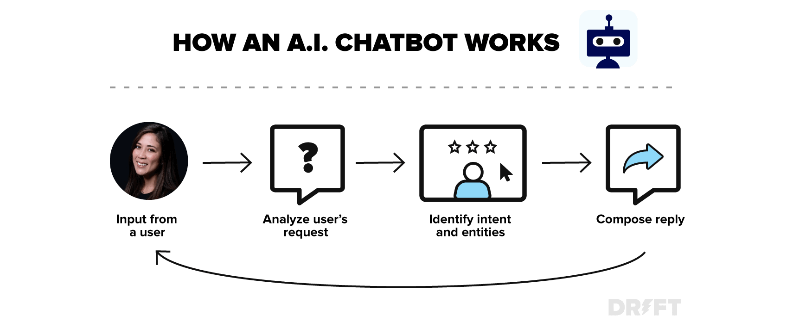

About Me

WELCOME TO CHATBOT
We’re here to make your life easier, one conversation at a time. Powered by advanced AI, Chatbot is designed to assist you with a wide variety of tasks, from answering questions to providing recommendations, and everything in between. Whether you're looking for quick information, help with a problem, or just someone to chat with, we're ready to help.
our mission is to make technology more accessible, intuitive, and useful for everyone. Our chatbot is constantly learning and improving, so we can offer smarter, faster responses tailored to your needs. You can think of us as your virtual assistant, ready to assist 24/7.
What Can Chatbot's Do?
- Answer Your Questions: Get instant, accurate answers to your questions, no matter the topic.
- Provide Recommendations: Whether you're choosing a product, service, or content, Chatbot offers tailored suggestions based on your preferences
- Solve Problems: Need help troubleshooting or resolving an issue? Chatbot is equipped to assist you step by step.
-
Have a Conversation: Sometimes, you just need someone to talk to. Chatbot is always ready for a casual chat!
HOW CHATBOT WORKS?

input processing:
- The chatbot analyzes the user’s message using NLP to detect intent and entities.
decision Making:
- Based on intent, the chatbot determines which type of response is appropriate.
Response Generation:
- The chatbot generates a response, either from a predefined set of templates or dynamically using AI.
Learning and Adapting:
- Some chatbots use machine learning to improve their responses over time.
Human Escalation:
- If the chatbot can't handle the query, it may escalate the issue to a live agent.